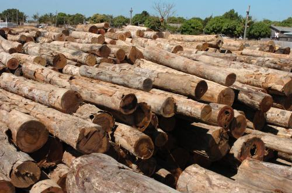
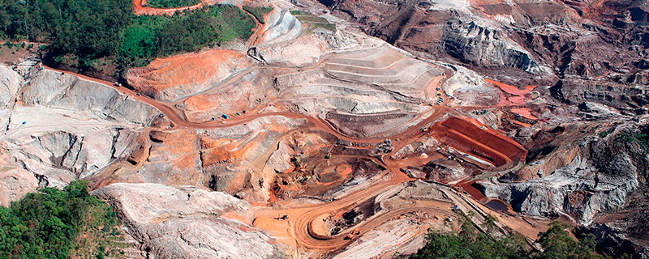
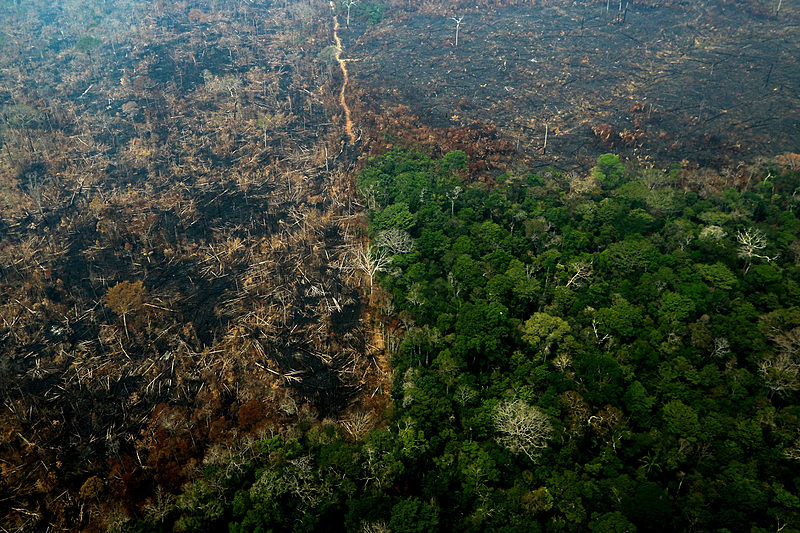
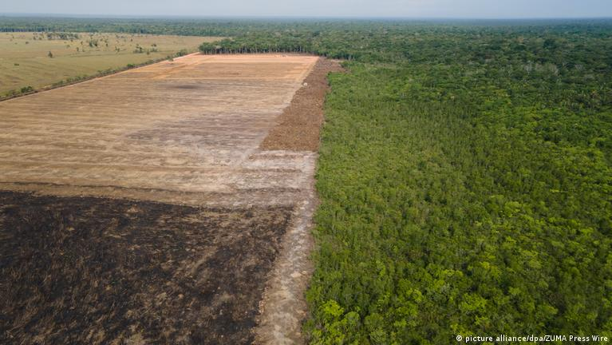

Causas do Desmatamento
O desmatamento ocorre por várias razões, incluindo:
Agricultura: O desmatamento na agricultura é uma preocupação global devido aos seus impactos negativos no meio ambiente, na biodiversidade e no clima. Ele ocorre quando áreas florestais são convertidas em terras agrícolas para atender à demanda por alimentos, biocombustíveis e outras commodities agrícolas. Pecuária: O desmatamento na pecuária tem impactos ambientais graves, incluindo a perda de habitat para espécies nativas, a degradação do solo, a erosão, a liberação de carbono armazenado nas florestas e a perda de biodiversidade. Além disso, o desmatamento na pecuária pode contribuir para as mudanças climáticas, tanto através da liberação de gases de efeito estufa quanto pela redução da capacidade das florestas de capturar e armazenar carbono. Exploração madeireira: O desmatamento na exploração madeireira é uma questão séria que afeta as florestas em todo o mundo. Esse tipo de desmatamento ocorre quando as árvores são cortadas para a produção de madeira ou produtos derivados dela, como papel e celulose.

Mineração:O desmatamento relacionado à exploração na mineração tem impactos significativos no meio ambiente, incluindo a perda de habitat para espécies nativas, a degradação do solo, a erosão, a contaminação da água e do ar, e a liberação de carbono armazenado nas florestas. Além disso, o desmatamento para a mineração pode ter consequências graves para as comunidades locais, incluindo a perda de acesso a recursos naturais e o deslocamento forçado.

Infraestrutura: O desmatamento relacionado à expansão da infraestrutura tem impactos significativos no meio ambiente, incluindo a perda de habitat para espécies nativas, a fragmentação de ecossistemas, a degradação do solo, a erosão e a liberação de carbono armazenado nas florestas. Além disso, o desmatamento na infraestrutura pode ter consequências sociais, como o deslocamento de comunidades locais e a perda de acesso a recursos naturais.

Desenvolvimento urbano: O desmatamento no desenvolvimento urbano tem impactos significativos no meio ambiente, incluindo a perda de habitat para espécies nativas, a fragmentação de ecossistemas, a degradação do solo, a erosão e a perda de serviços ecossistêmicos. Além disso, o desenvolvimento urbano desordenado pode aumentar a vulnerabilidade das cidades a desastres naturais, como inundações e deslizamentos de terra.
